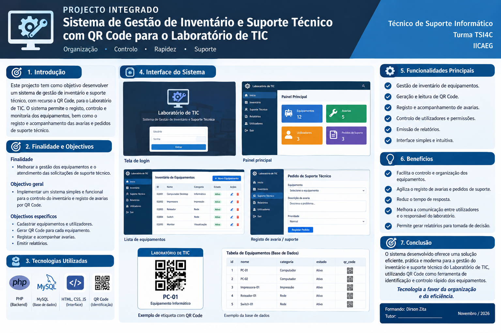
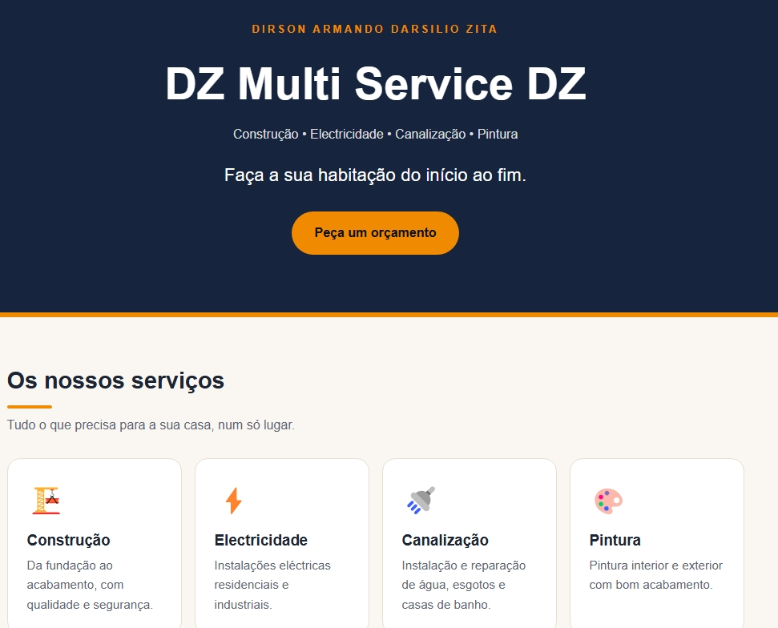

Gestão de Inventário com QR Code
Sistema para gerir o inventário e os pedidos de suporte técnico do Laboratório de TIC, com um QR Code em cada equipamento. Feito com PHP, MySQL, HTML, CSS e JavaScript.
Sou estudante de Técnico de Suporte Informático e gosto de ser a pessoa a quem se recorre quando o computador deixa de ligar, a rede cai ou a página não abre. Aprendo a diagnosticar o problema, a encontrar a causa e a deixar tudo a funcionar. Essa forma de pensar é a mesma que uso noutra área em que trabalho: a electricidade. Como electricista, em instalações industriais e residenciais, aprendi que um bom técnico não adivinha: testa, descobre a origem da falha e só sai quando tudo volta a funcionar. Junto estes dois mundos porque a lógica é a mesma: quando funcionam bem, ninguém repara; quando falham, tudo pára. Interesso-me por suporte técnico, redes e desenvolvimento web, e este portfólio mostra o que já construí e o que ainda vou construir.
| Área | Habilidade |
|---|---|
| Informática | Suporte técnico e manutenção |
| Informática | HTML e CSS |
| Informática | Redes de computadores |
| Informática | Microsoft Office |
| Electricidade | Instalações eléctricas |
| Administração | Digitação de dados |

Sistema para gerir o inventário e os pedidos de suporte técnico do Laboratório de TIC, com um QR Code em cada equipamento. Feito com PHP, MySQL, HTML, CSS e JavaScript.
Cartaz de divulgação de serviços de manutenção de computadores: limpeza, instalação de sistemas operativos, remoção de vírus e configuração de redes.

Página web de apresentação de serviços de construção, electricidade, canalização e pintura, com botão para pedir um orçamento.
Chega de ficar com a ideia somente no papel, entre em contacto e vamos trabalhar